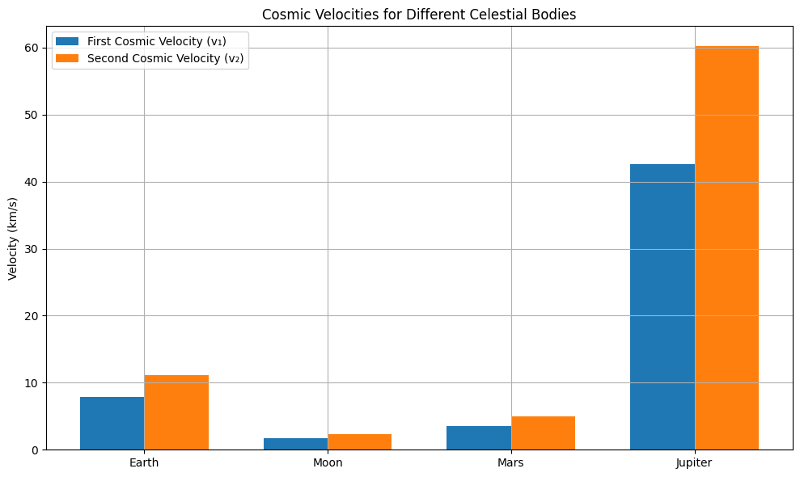

Problem 2
1. Theoretical Foundation
Cosmic velocities define the minimum speeds required to achieve specific goals in gravitational systems — from stable orbit to escaping the Solar System.
First Cosmic Velocity (\( v_1 \)) – Orbital Velocity
This is the minimum horizontal velocity required to maintain a stable circular orbit near the surface of a celestial body.
- \( G \) — gravitational constant
- \( M \) — mass of the celestial body
- \( r \) — orbital radius (typically the radius of the planet for low Earth orbit)
✅ A satellite launched at this speed will remain in free fall around the planet.
Second Cosmic Velocity (\( v_2 \)) – Escape Velocity
This is the minimum speed required to break free from the gravitational pull of a celestial body without further propulsion.
- This velocity allows an object to reach infinity with zero final velocity.
- Used for missions leaving Earth toward the Moon, Mars, etc.
✅ The spacecraft overcomes gravitational binding energy.
Third Cosmic Velocity (\( v_3 \)) – Interstellar Escape Velocity
This is the minimum speed required to leave the entire Solar System from Earth’s orbit, overcoming the Sun’s gravitational field.
Assuming a starting point at Earth's orbit (neglecting Earth's own gravity):
- \( M_{\odot} \) — mass of the Sun
- \( r_{\text{Earth}} \) — Earth's orbital radius around the Sun
To launch from Earth’s surface and escape the Solar System, both Earth’s gravity and orbital motion must be taken into account:
✅ Often achieved through gravity assists and deep-space propulsion.
Summary
| Velocity | Meaning | Formula |
|---|---|---|
| \( v_1 \) | Circular orbital velocity | \( \sqrt{GM/r} \) |
| \( v_2 \) | Escape from planet | \( \sqrt{2GM/r} \) |
| \( v_3 \) | Escape from star system | \( \sqrt{2GM_{\odot}/r} \) |
These velocities form the foundation of orbital mechanics and are critical for mission planning, satellite deployment, and interplanetary navigation.
2. Mathematical Derivations and Dependencies
The first, second, and third cosmic velocities are derived from Newton's law of universal gravitation and principles of conservation of energy.
First Cosmic Velocity (\( v_1 \))
This is the orbital speed for a circular orbit just above the surface:
From Newton’s law of gravitation:
From Newton's second law (centripetal force):
Equating the forces:
Second Cosmic Velocity (\( v_2 \))
This is derived from energy conservation:
Here: - The kinetic energy must exactly cancel the gravitational potential energy. - Final energy at infinity is zero.
Third Cosmic Velocity (\( v_3 \))
To escape the Sun’s gravity from Earth’s orbit:
But if launched from Earth, must also overcome Earth’s escape velocity \( v_{2,\text{Earth}} \).
The actual total velocity depends on launch direction and existing orbital motion:
where: - \( \theta \) is the angle between launch direction and Earth’s orbital velocity vector.
Parameter Dependencies
| Parameter | Influence |
|---|---|
| \( M \) — central mass | All three velocities increase with mass |
| \( r \) — orbital radius | All velocities decrease with larger radius |
| \( G \) — gravitational constant | Appears in all expressions |
| \( \theta \) — launch angle (only for \( v_3^{\text{total}} \)) | Affects net velocity due to vector addition |
These derivations form the basis for calculating required launch speeds, designing trajectories, and estimating fuel needs in orbital mechanics.
3. Calculations and Visualizations
To compare the first, second, and third cosmic velocities across celestial bodies, we calculate them for:
- Earth
- Moon
- Mars
- Jupiter
Constants
| Body | Radius \( r \) (m) | Mass \( M \) (kg) |
|---|---|---|
| Earth | \( 6.371 \times 10^6 \) | \( 5.972 \times 10^{24} \) |
| Moon | \( 1.737 \times 10^6 \) | \( 7.342 \times 10^{22} \) |
| Mars | \( 3.390 \times 10^6 \) | \( 6.417 \times 10^{23} \) |
| Jupiter | \( 6.991 \times 10^7 \) | \( 1.898 \times 10^{27} \) |
Python Code
import numpy as np
import matplotlib.pyplot as plt
# Gravitational constant
G = 6.67430e-11
# Data: name, radius (m), mass (kg)
bodies = {
"Earth": {"r": 6.371e6, "M": 5.972e24},
"Moon": {"r": 1.737e6, "M": 7.342e22},
"Mars": {"r": 3.390e6, "M": 6.417e23},
"Jupiter": {"r": 6.991e7, "M": 1.898e27}
}
# Prepare results
results = []
for name, data in bodies.items():
r = data["r"]
M = data["M"]
v1 = np.sqrt(G * M / r) # First cosmic velocity
v2 = np.sqrt(2) * v1 # Escape velocity
results.append((name, v1, v2))
# Plotting
labels = [r[0] for r in results]
v1_vals = [r[1] / 1000 for r in results] # km/s
v2_vals = [r[2] / 1000 for r in results] # km/s
x = np.arange(len(labels))
width = 0.35
plt.figure(figsize=(10, 6))
plt.bar(x - width/2, v1_vals, width, label='First Cosmic Velocity (v₁)')
plt.bar(x + width/2, v2_vals, width, label='Second Cosmic Velocity (v₂)')
plt.ylabel('Velocity (km/s)')
plt.title('Cosmic Velocities for Different Celestial Bodies')
plt.xticks(x, labels)
plt.legend()
plt.grid(True)
plt.tight_layout()
plt.show()
Example Results (rounded)

| Body | \( v_1 \) (km/s) | \( v_2 \) (km/s) |
|---|---|---|
| Earth | ~7.91 | ~11.2 |
| Moon | ~1.68 | ~2.38 |
| Mars | ~3.55 | ~5.03 |
| Jupiter | ~42.1 | ~59.5 |
Observations
- Jupiter requires the highest velocities due to its immense mass.
- The Moon requires the least velocity — ideal for training and early missions.
- Escape velocity is always \( \sqrt{2} \) times the orbital velocity for a given body.
These values are fundamental in planning rocket launches, satellite deployment, and interplanetary travel.
4. Application in Space Exploration
Understanding and applying the first, second, and third cosmic velocities is fundamental to spaceflight and interplanetary mission design.
1. First Cosmic Velocity – Stable Orbit
Used to place satellites into low Earth orbit (LEO), geostationary orbit, or planetary orbit:
- Example:
The International Space Station travels at approximately 7.66 km/s — close to Earth’s first cosmic velocity. - Application:
Communication, weather, GPS, and Earth-observation satellites.
2. Second Cosmic Velocity – Escape from Planet
Used when launching interplanetary missions (e.g. Mars rovers, lunar landers):
- Example:
The Apollo missions used Saturn V to reach speeds >11.2 km/s to escape Earth’s gravity. - Application:
Missions to the Moon, Mars, and beyond must exceed \( v_2 \) to leave Earth's gravitational field.
3. Third Cosmic Velocity – Escape the Solar System
Used in missions that aim to leave the Sun’s gravitational influence:
- Example:
Voyager 1 reached ~16.6 km/s and is now in interstellar space — the first human-made object to achieve this. - Achieved through:
Gravity assists (slingshot maneuvers using planets) rather than direct launch at \( v_3 \).
Combined Considerations
| Mission Type | Required Velocity |
|---|---|
| LEO Satellite | \( v_1 \) (e.g., 7.9 km/s) |
| Lunar / Interplanetary | \( > v_2 \) (e.g., 11.2+ km/s) |
| Interstellar Probe | \( \geq v_3 \) from Earth’s orbit |
For real missions, engineers account for atmosphere, rotation, inclination, planetary motion, and fuel efficiency — but cosmic velocities serve as essential baselines.
Summary
- \( v_1 \) defines orbital mechanics and satellite dynamics.
- \( v_2 \) is critical for reaching the Moon, Mars, and other planets.
- \( v_3 \) underpins our journey into deep space.
These velocities help bridge theory and practice in astrodynamics, launch planning, and interstellar exploration.